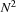
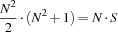
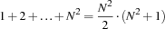

7.3 Example: Magic Squares
This example shows a smart representation of a matrix and a concomitant defined constraint of higher order. The model will eliminate symmetries by imposing order constraints. Propagation will be drastically improved by exploiting a redundant constraint.
Problem Specification
The Magic Square Puzzle consists in finding for given  an
an  -matrix such that:
-matrix such that:
Every field of the matrix is an integer between 1 and .
The fields of the matrix are pairwise distinct.
The sums of the rows, columns, and the two main diagonals are all equal.
A magic square for  looks as follows:
looks as follows:

p> The Magic Square Puzzle is extremely hard for large . Even for  , our script will have to explore almost 8000 nodes to find a solution.
, our script will have to explore almost 8000 nodes to find a solution.
Model
We model the problem by having a variable  for every field
for every field  of the matrix. Moreover, we have one additional variable
of the matrix. Moreover, we have one additional variable  and require that the sum of every row, column, and main diagonal equals .
and require that the sum of every row, column, and main diagonal equals .
Without loss of generality, we can impose the following order constraints eliminating symmetries:

Since the sum of the sums of the rows must equal the sum of all fields, we have the redundant constraint

To see this, note that sum of all fields equals

and that the sum of each of the rows must be .
Distribution Strategy
We distribute on the variables  with a first-fail strategy splitting the domain of the selected variable and trying the lower half first.
with a first-fail strategy splitting the domain of the selected variable and trying the lower half first.
fun {MagicSquare N}
NN = N*N
L1N = {List.number 1 N 1} % [1 2 3 ... N]
in
proc {$ Square}
fun {Field I J}
Square.((I-1)*N + J)
end
proc {Assert F}
% {F 1} + {F 2} + ... + {F N} =: Sum
{FD.sum {Map L1N F} '=:' Sum}
end
Sum = {FD.decl}
in
{FD.tuple square NN 1#NN Square}
{FD.distinct Square}
%% Diagonals
{Assert fun {$ I} {Field I I} end}
{Assert fun {$ I} {Field I N+1-I} end}
%% Columns
{For 1 N 1
proc {$ I} {Assert fun {$ J} {Field I J} end} end}
%% Rows
{For 1 N 1
proc {$ J} {Assert fun {$ I} {Field I J} end} end}
%% Eliminate symmetries
{Field 1 1} <: {Field N N}
{Field N 1} <: {Field 1 N}
{Field 1 1} <: {Field N 1}
%% Redundant: sum of all fields = (number rows) * Sum
NN*(NN+1) div 2 =: N*Sum
%%
{FD.distribute split Square}
end
end
Figure 7.3: A script for the Magic Square Puzzle.
Script
Figure 7.3 shows a script realizing the model and distribution strategy just discussed. The actual script is created by a procedure MagicSquare taking N as parameter.
The script represents the matrix as a tuple with elements. The tuple is the value of the root variable Square. The function
{Field I J} returns the component of Square that represents the field at position (I,J). The variable Sum takes the sum of the rows, columns, and main diagonals as value. The procedure
{AssertF}
takes a function F and posts the constraint
{F1} + {F2} + ... + {FN} = Sum
Obviously, {Assert F} is a defined constraint of higher order. With the help of this defined constraint it is straightforward to state that the sums of the rows, columns, and main diagonals are all equal to Sum.
With the Explorer you can find out that for N=3 there is exactly one magic square satisfying the ordering constraints of our model. Without the ordering constraints there are 8 different solutions. Omitting the propagator for the redundant constraint will increase the search tree by an order of magnitude.